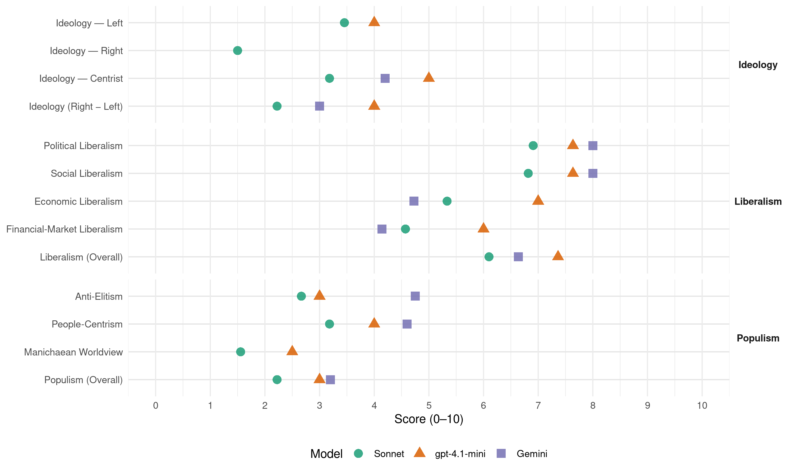

cdH (Belgium, 2003)
manifesto_id 21522_200305
Get full text: This site shows derived annotations and short verbatim quotes only. The full manifesto text is © Manifesto Project / WZB — obtain it via manifesto-project.wzb.eu using the manifesto_id above.
Headline scores
| Dimension | Sonnet | gpt-4.1-mini | Gemini |
|---|---|---|---|
| Populism (Overall) | 2.2 | 3.0 | 3.2 |
| Anti-Elitism | 2.7 | 3.0 | 4.8 |
| People-Centrism | 3.2 | 4.0 | 4.6 |
| Manichaean Worldview | 1.6 | 2.5 | – |
| Ideology (Right − Left) | 2.2 | 4.0 | 3.0 |
| Liberalism (Overall) | 6.1 | 7.4 | 6.6 |
| Political Liberalism | 6.9 | 7.6 | 8.0 |
| Social Liberalism | 6.8 | 7.6 | 8.0 |
| Economic Liberalism | 5.3 | 7.0 | 4.7 |
| Financial-Market Liberalism | 4.6 | 6.0 | 4.1 |
Evidence per dimension
Economic Liberalism
Gemini · score 4.0 · verified · chunk 1
“les métiers de la sphère marchande”
équilibrer les statuts entre les métiers du cœur et les métiers de la sphère marchande, valorisés et souvent mieux payés
Gemini · score 6.0 · verified · chunk 2
“relations avec le secteur privé”
la stabilité des équipes pédagogiques et en prenant en considération la nature juridique des PO et des contrats conclus avec le personnel enseignant; - encourager la mobilité et les relations avec le secteur privé et le secteur public général.
Gemini · score 4.0 · verified · chunk 3
“principes de libre concurrence”
l’Union européenne ne peut en effet se réfugier derrière des principes de libre concurrence pour négliger ses responsabilités. Cette révision devra
Gemini · score 3.0 · verified · chunk 4
“refuse l’option d’une « marchandisation » de la santé”
opérés par les commissions de conventions. Pour cela, il faut des acteurs responsables et légitimes. Le cdH refuse l’option d’une « marchandisation » de la santé qui, risque d’aboutir
Gemini · score 3.0 · verified · chunk 5
“processus de libéralisation permet un élargissement”
menaces. Certes le processus de libéralisation permet un élargissement des possibilités de choix, mais également la baisse
Gemini · score 4.0 · verified · chunk 6
“réduire les charges sur le travail”
Ces propositions s’articulent autour des axes suivants : - réduire les charges sur le travail ; - simplifier les mesures pour l’emploi
Gemini · score 4.0 · verified · chunk 7
“régulation mondiale minimale”
gestion libérale des économies, régulation mondiale minimale, la richesse globale de la planète continuera
Gemini · score 7.0 · verified · chunk 8
“l’entreprise doit être considérée comme le premier créateur économique de valeur ajoutée”
Dans notre société, l’entreprise doit être considérée comme le premier créateur économique de valeur ajoutée. Un corollaire est l’acceptation du profit en tant que critère de réussite –, l’entreprise n’étant pas durable sans rentabilité à moyen terme – et de développement – le bénéfice permettant l’autofinancement des investissements et la perspective de profit attirant les financements extérieurs.
Gemini · score 8.0 · verified · chunk 9
“l’acceptation du profit en tant que critère de réussite”
Un corollaire est l’acceptation du profit en tant que critère de réussite –, l’entreprise n’étant pas durable sans rentabilité
Gemini · score 4.0 · verified · chunk 10
“refuse un libre échangisme qui privilégie”
Le cdH refuse un libre échangisme qui privilégie le seul laisser-faire des marchés
Gemini · score 5.0 · verified · chunk 11
“respect de règles de concurrence mondiales”
veillerait au respect de règles de concurrence mondiales. Ce Bureau devrait être intégré à l’OMC
gpt-4.1-mini · score 7.0 · verified · chunk 1
“la politique fiscale plus familiale”
Dans ce contexte, le cdH entend mieux protéger financièrement les familles en adaptant la sécurité sociale aux besoins des familles et en rendant la politique fiscale plus familiale.
gpt-4.1-mini · score 6.0 · verified · chunk 2
“une fiscalité automobile « plus familiale »”
Le cdH propose, à cet égard, de : ? tenir compte de la situation familiale en accordant une réduction de la taxe de circulation (TC) à concurrence de 10 % par enfant à charge et ce jusqu’au cinquième enfant. Le coefficient réducteur serait plafonné à 50 % à partir du cinquième enfant et le montant de la réduction serait, quant à lui, plafonné à 300 euros (12.102 BEF); ? appliquer le même principe familial pour la taxe de mise en circulation (TMC). Le coefficient réducteur serait, également plafonné à 50 % à partir du cinquième enfant mais le montant de la réduction serait, quant à lui, plafonné à 620 euros (25.010 BEF) ; ? n’appliquer ces réductions familiales que sur un seul véhicule par ménage, à savoir sur le véhicule dont le nombre de places correspond au minimum au nombre de personnes qui composent le ménage.
gpt-4.1-mini · score 7.0 · verified · chunk 3
“refinancer le secteur de l’aide à la jeunesse”
…Au niveau du financement, le cdH propose de : - refinancer le secteur de l’aide à la jeunesse, dans une proportion nettement plus importante que ce que le Gouvernement de la Communauté française a programmé dans le plan d’action…
gpt-4.1-mini · score 7.0 · verified · chunk 4
“libéralisation du secteur des soins de santé”
Le cdH refuse l’option d’une « marchandisation » de la santé qui, risque d’aboutir à une stratification de la société entre ceux qui auront accès à la totalité des soins de qualité et ceux pour qui ces derniers seront inabordables.
gpt-4.1-mini · score 7.0 · verified · chunk 5
“le cdH propose de : - modifier les relations entre les universités et les médecins qui réalisent cette recherche clinique et l’industrie pharmaceutique”
Le cdH propose de : - modifier les relations entre les universités et les médecins qui réalisent cette recherche clinique et l’industrie pharmaceutique ; - créer un fond alimenté, d’une part, par les pouvoirs publics mais, d’autre part, par l’industrie pharmaceutique. Celle-ci, sur la base d’une réduction substantielle de toute l’activité publicitaire promotionnelle et les à-côtés d’activités culturelles offertes aux médecins devrait réorienter ses dépenses vers ce fond.
gpt-4.1-mini · score 6.0 · verified · chunk 6
“réduire les charges sur le travail”
Pour soutenir la création d’emplois, le cdH propose de concentrer les moyens sur un nombre limité de propositions fortes, simples et concrètes. Ces propositions s’articulent autour des axes suivants : réduire les charges sur le travail ; simplifier les mesures pour l’emploi ; partager le temps de travail ; encourager le retour sur le marché du travail ; encourager la mobilité professionnelle.
gpt-4.1-mini · score 8.0 · verified · chunk 7
“soulager la fiscalité sur le travail en trouvant des ressources alternatives”
Le cdH propose de : - soutenir pleinement la méthode ouverte de coordination inspirée du processus de Luxembourg. Elle incite chaque Etat membre à poursuivre ses efforts en matière d’emploi avec des indicateurs de quantité et de qualité ainsi que des références aux meilleures pratiques ; - soulager la fiscalité sur le travail en trouvant des ressources alternatives qui ne peuvent se concevoir que dans un cadre européen et qui doivent trouver un équilibre entre intérêts des travailleurs, entreprises et Etats ; - encourager l’Europe à jouer son rôle de pionnière en matière d’égalité d’accès à l’emploi et de rémunération.
gpt-4.1-mini · score 7.0 · verified · chunk 8
“favoriser la vente directe en créant un label « de la fourche à l’assiette »”
améliorer les mesures agri-environnementales et procéder à leur évaluation permanente. Dans le cadre de la révision de la PAC, améliorer les mesures agri-environnementales de sorte qu’elles aboutissent à un système de rétribution directe des agriculteurs
gpt-4.1-mini · score 8.0 · verified · chunk 9
“diminuer le coût du travail une priorité de tout premier ordre”
Le cdH propose de : - faire de la diminution du coût du travail une priorité de tout premier ordre qui implique l’affectation spécifique de ressources publiques. Il est urgent de rouvrir le débat sur ce point et de procéder à des choix : - garantir, en concertation avec les partenaires sociaux, la maîtrise du coût du travail et reprendre une programmation pluriannuelle de réduction des charges sociales,
gpt-4.1-mini · score 6.0 · verified · chunk 10
“adapter les contraintes réglementaires à la taille des entreprises”
…adapter les contraintes réglementaires à la taille des entreprises (particulièrement pour les réglementations qui imposent de lourds investissements de mise en conformité), afin de préserver ou de rétablir la position concurrentielle du petit commerce…
gpt-4.1-mini · score 8.0 · verified · chunk 11
“simplifier la répartition des compétences entre les différentes institutions”
Le cdH propose de simplifier la répartition des compétences entre les différentes institutions du sud du pays (communauté, région, province, communautés urbaines ou de pays, intercommunales, communes,…)
Sonnet · score 5.0 · mixed · chunk 1
“vision purement libérale classique de la société”
Le politique ne peut plus se permettre de se confiner dans une vision purement libérale classique de la société qui considère que l’espace privé doit évoluer en toute autonomie
Sonnet · score 5.0 · mixed · chunk 2
“déductibilité fiscale largement incitative des fonds investis”
avec une déductibilité fiscale largement incitative des fonds investis. Le cdH propose également que les entreprises puissent investir
Sonnet · score 5.0 · mixed · chunk 3
“principes de libre concurrence pour négliger ses responsabilités”
l’Union européenne ne peut en effet se réfugier derrière des principes de libre concurrence pour négliger ses responsabilités. Cette révision devra s’effectuer “par le haut”
Sonnet · score 4.0 · verified · chunk 4
“une réduction du taux de TVA de 21 % à 6 %”
notamment par une réduction du taux de TVA de 21 % à 6 %; - l’instauration d’un permis de conduire probatoire
Sonnet · score 4.0 · mixed · chunk 5
“libéralisation croissante des marchés”
Dans un contexte de libéralisation croissante des marchés et donc de modernisation, quelles exigences l’Etat doit-il avoir
Sonnet · score 5.0 · mixed · chunk 6
“réduire les charges sur le travail”
Ces propositions s’articulent autour des axes suivants : - réduire les charges sur le travail ; - simplifier les mesures pour l’emploi ; - partager le temps de travail
Sonnet · score 5.0 · mixed · chunk 7
“soulager la fiscalité sur le travail en trouvant des ressources alternatives”
soulager la fiscalité sur le travail en trouvant des ressources alternatives qui ne peuvent se concevoir que dans un cadre européen et qui doivent trouver un équilibre entre intérêts des travailleurs, entreprises et Etats
Sonnet · score 5.0 · mixed · chunk 8
“l’entreprise doit être considérée comme le premier créateur économique”
l’entreprise doit être considérée comme le premier créateur économique de valeur ajoutée. Un corollaire est l’acceptation du profit en tant que critère de réussite
Sonnet · score 7.0 · verified · chunk 9
“faire sauter les entraves à la création”
b) Faire sauter les entraves à la création et au développement des entreprises Pour le cdH, il faut combattre avec détermination les nombreux obstacles
Sonnet · score 5.0 · mixed · chunk 10
“libre-échangisme à l’état brut non plus”
Le protectionnisme radical n’est certainement pas la solution, le libre-échangisme à l’état brut non plus. Seule libéralisation régulée des échanges mondiaux offre des perspectives encourageantes
Sonnet · score 5.0 · verified · chunk 11
“marché européen de l’armement”
préalable à l’instauration d’un véritable marché européen de l’armement dans lequel la Belgique doit préserver son intérêt.
Financial-Market Liberalism
Gemini · score 3.0 · verified · chunk 1
“celui qui gagne en bourse aura”
celui qui maîtrise Internet, qui gagne en bourse aura toujours un « rôle » moins important que celui qui apprend à parler
Gemini · score 3.0 · verified · chunk 3
“Régler les pratiques des banques”
destinés à des mineurs de moins de 12 ans ; C. Régler les pratiques des banques à l’égard des mineurs Les relations entre les
Gemini · score 4.0 · verified · chunk 5
“harmonisation de la fiscalité de l’épargne”
au niveau européen, par une harmonisation de la fiscalité de l’épargne et par l’introduction d’une taxe sur
Gemini · score 5.0 · verified · chunk 7
“perfectionner l’environnement prudentiel”
Pour plus de détails… B. Perfectionner l’environnement prudentiel Le cdH propose de : - améliorer la
Gemini · score 4.0 · verified · chunk 8
“promouvoir le contrôle des capitaux à court terme”
promouvoir le contrôle des capitaux à court terme dans les pays en développement pour redonner des marges de manœuvre aux politiques nationales moins soumises aux contraintes extérieures et stabiliser les taux de change ;
Gemini · score 7.0 · verified · chunk 9
“recommandations définies dans le cadre des Accords de Bâle II”
En matière de crédits bancaires, qui constituent la première source de financement externe des PME, les nouvelles recommandations définies dans le cadre des Accords de Bâle II
Gemini · score 3.0 · verified · chunk 10
“tarification des services bancaires de paiement”
notamment en charge le contrôle des tarification pratiquées, afin d’éviter des abus de positions dominantes préjudiciables à des PME ou indépendants (p. ex. la tarification des services bancaires de paiement électronique)
gpt-4.1-mini · score 7.0 · verified · chunk 7
“améliorer la transparence des acteurs privés et l’information des marchés”
Le cdH propose de : - améliorer la transparence des acteurs privés et l’information des marchés grâce à l’instauration d’un système de comptabilité universelle. Le but serait de parvenir à un système universel de comptabilité publique dont l’adoption par les pays moins avancés conditionnerait l’octroi des aides.
gpt-4.1-mini · score 4.0 · verified · chunk 8
“promouvoir le contrôle des capitaux à court terme dans les pays en développement”
promouvoir le contrôle des capitaux à court terme dans les pays en développement pour redonner des marges de manœuvre aux politiques nationales moins soumises aux contraintes extérieures et stabiliser les taux de change
gpt-4.1-mini · score 7.0 · verified · chunk 9
“stimuler l’adoption d’un code de conduite par les établissements de crédits à l’égard des PME”
Au niveau fédéral, le cdH propose de : - stimuler l’adoption d’un code de conduite par les établissements de crédits à l’égard des PME ; - introduire vis-à-vis du secteur bancaire la notion de « corporate responsibility », s’inspirant du « Community Reinvestment Act » (CRA) en vigueur aux Etats-Unis,
Sonnet · score 4.0 · verified · chunk 3
“réglementer de manière claire et transparente l’accès des mineurs d’âge aux services financiers”
le cdH propose de légiférer les relations « banques et mineurs d’âge ». Le cdH propose de : - interdire toute publicité bancaire… - réglementer de manière claire et transparente l’accès des mineurs d’âge aux services financiers
Sonnet · score 5.0 · verified · chunk 4
“recourir à des assureurs privés commerciales”
Elles seront par conséquent tentées de recourir à des assureurs privés, ce qui est de nature à affaiblir notre système de sécurité sociale et s’apparente davantage au modèle anglo-saxon
Sonnet · score 4.0 · verified · chunk 5
“harmonisation de la fiscalité de l’épargne”
au niveau européen, par une harmonisation de la fiscalité de l’épargne et par l’introduction d’une taxe sur les émissions de CO²
Sonnet · score 5.0 · mixed · chunk 7
“améliorer la transparence des acteurs privés et l’information des marchés”
améliorer la transparence des acteurs privés et l’information des marchés grâce à l’instauration d’un système de comptabilité universelle… Le FMI assurerait alors, la diffusion des données dans le cadre de son rôle de surveillance et de prévention des crises.
Sonnet · score 3.0 · verified · chunk 8
“promouvoir le contrôle des capitaux à court terme”
promouvoir le contrôle des capitaux à court terme dans les pays en développement pour redonner des marges de manœuvre aux politiques nationales moins soumises aux contraintes extérieures
Sonnet · score 6.0 · verified · chunk 9
“accroître la transparence de la procédure d’octroi d’un crédit”
accroître la transparence de la procédure d’octroi d’un crédit en améliorant les dispositifs d’évaluation des PME
Sonnet · score 5.0 · verified · chunk 10
“tarification des services bancaires de paiement électronique”
instaurer un organe régulateur ayant notamment en charge le contrôle des tarification pratiquées, afin d’éviter des abus de positions dominantes préjudiciables à des PME ou indépendants (p. ex. la tarification des services bancaires de paiement électronique)
Sonnet · score 5.0 · verified · chunk 11
“problèmes financiers et monétaires”
Le second vice-président étant le commissaire chargé des problèmes financiers et monétaires. C’est lui qui a vocation à devenir l’interlocuteur politique de la Banque centrale.
Political Liberalism
Gemini · score 8.0 · verified · chunk 1
“L’Humanisme démocratique, c’est avant tout”
L’Humanisme démocratique, c’est avant tout l’option d’une société basée sur le sens de l’autre.
Gemini · score 8.0 · verified · chunk 2
“respect des garanties juridiques fondamentales”
quant à la justification de l’intervention judiciaire, au respect des garanties juridiques fondamentales et au respect des systèmes communautaires d’aide
Gemini · score 8.0 · verified · chunk 3
“respect des garanties juridiques fondamentales”
quant à la justification de l’intervention judiciaire, au respect des garanties juridiques fondamentales et au respect des systèmes communautaires d’aide
Gemini · score 8.0 · verified · chunk 4
“droit à la santé comme un droit fondamental”
L’article 23 2° de la Constitution belge reconnaît le droit à la santé comme un droit fondamental. Mais notre système
Gemini · score 8.0 · verified · chunk 5
“consécration des droits de l’homme”
se sont traduits notamment au cours du XXème siècle par la consécration des droits de l’homme et des libertés fondamentales au niveau national
Gemini · score 8.0 · verified · chunk 6
“un large débat démocratique et public”
Cette réflexion doit être menée au cours d’un large débat démocratique et public, dépassant la technicité du droit des brevets
Gemini · score 8.0 · verified · chunk 7
“un réel débat démocratique”
prochaine législature, il est indispensable d’avoir un réel débat démocratique sur les questions liées au droit d’asile
Gemini · score 8.0 · verified · chunk 8
“respect des droits humains et des principes fondamentaux de la démocratie”
Par contre, des conditions strictes, liées au respect des droits humains et des principes fondamentaux de la démocratie, à un budget exact, à des prélèvements fiscaux suffisants (tendant à atteindre 25% du PIB) et justement répartis sur les facteurs de production, à des dépenses budgétaires assurant une juste part aux programmes de santé, d’éducation et de logement, seront imposées et contrôlées.
Gemini · score 8.0 · verified · chunk 9
“dépolitisation de l’ensemble des administrations”
signer par l’ensemble des partis politiques démocratiques un large pacte de dépolitisation de l’ensemble des administrations de tous les niveaux
Gemini · score 8.0 · verified · chunk 10
“fondements de l’Etat de droit”
Comme la Constitution est le siège des fondements de l’Etat de droit et notamment de la protection
Gemini · score 8.0 · verified · chunk 11
“fondements de l’Etat de droit et notamment de la protection”
la Constitution est le siège des fondements de l’Etat de droit et notamment de la protection de la minorité francophone
gpt-4.1-mini · score 7.0 · verified · chunk 1
“le respect de la norme, le sens de l’interdit, le sens et le respect de l’autre”
Et nous ne voyons pas assez que le respect de la norme, le sens de l’interdit, le sens et le respect de l’autre, l’hygiène de vie, le goût de l’apprentissage, l’éveil culturel, l’ouverture au monde et le sens de la citoyenneté constituent autant de facteurs de stabilité et d’harmonie sociale qui sont, avant toute chose, des éléments qui s’apprennent et se construisent prioritairement au sein des familles.
gpt-4.1-mini · score 7.0 · verified · chunk 2
“la connaissance d’autres langues est aujourd’hui devenue indispensable”
Qu’on cherche un job, qu’on se promène à Anvers, Madrid ou Berlin ou encore qu’on surfe sur Internet, la connaissance d’autres langues est aujourd’hui devenue indispensable. Il s’agit d’un véritable tremplin pour l’emploi mais aussi le signe et le moyen d’une ouverture sur le monde.
gpt-4.1-mini · score 8.0 · verified · chunk 3
“le respect des garanties juridiques fondamentales”
…une intervention judiciaire ayant pour objectifs la sanction, la réparation des dommages causés par le fait pénal, la responsabilisation du jeune, la promotion de son insertion sociale Partant du principe que l’intervention judiciaire trouve à la fois sa justification et ses limites dans le fait pénal commis par le mineur d’âge, cette approche tend à plus de clarté vis-à-vis du jeune quant à le respect des garanties juridiques fondamentales et au respect des systèmes communautaires d’aide…
gpt-4.1-mini · score 7.0 · verified · chunk 4
“la loi du 24 novembre 1997 visant à combattre la violence au sein du couple”
La loi du 24 novembre 1997 visant à combattre la violence au sein du couple a été un bon premier pas en avant en matière de violence conjugale puisqu’elle a reconnu la dimension sociale du phénomène afin de donner un signal aux victimes et les encourager à s’adresser aux services de police.
gpt-4.1-mini · score 8.0 · verified · chunk 5
“le droit à la protection de la vie, consacré par l’article 2 de la Convention européenne des Droits de l’Homme”
Le cdH a déposé en vain un nombre considérable d’amendements au texte qui, tel qu’il a été adopté, permet toutes les dérives et entre en contradiction avec le droit à la protection de la vie, consacré par l’article 2 de la Convention européenne des Droits de l’Homme. Le cdH propose de : - modifier la loi du 28 mai 2002 afin d’apporter davantage de précisions et de rigueur aux dispositions relatives à l’euthanasie ; - supprimer notamment la possibilité d’avoir recours à l’euthanasie pour les personnes ne se trouvant pas en phase terminale et pour les mineurs émancipés.
gpt-4.1-mini · score 8.0 · verified · chunk 6
“droit au respect de son intégrité physique”
Ce faisant, l’application de la directive pourrait porter atteinte au principe d’inviolabilité du corps humain qui postule que tout individu a droit au respect de son intégrité physique et ne peut subir aucune atteinte sans son consentement.
gpt-4.1-mini · score 8.0 · verified · chunk 7
“participation équilibrée des hommes et des femmes au processus de décision”
Le cdH propose de : - mettre en œuvre la participation équilibrée des hommes et des femmes au processus de décision et aux postes de responsabilité. Il y a lieu de « partager» réellement la décision politique car il en va de la crédibilité intrinsèque des mesures adoptées par les législateurs et les exécutifs.
gpt-4.1-mini · score 7.0 · verified · chunk 8
“respect des droits humains et des principes fondamentaux de la démocratie”
des conditions strictes, liées au respect des droits humains et des principes fondamentaux de la démocratie, à un budget exact, à des prélèvements fiscaux suffisants
gpt-4.1-mini · score 7.0 · verified · chunk 9
“respecter chaque personne, c’est dynamiser son envie d’entreprendre”
V. Respecter chaque personne, c’est dynamiser son envie d’entreprendre A. Développer la culture d’entreprendre Dans notre société, l’entreprise1 doit être considérée comme le premier créateur économique de valeur ajoutée.
gpt-4.1-mini · score 8.0 · verified · chunk 10
“le cdH propose de créer une agence commune d’information pour assurer une information de qualité”
…Chaque niveau de pouvoir devrait disposer d’un service d’information rattaché non plus à son gouvernement mais à son parlement. Ainsi tous les partis démocratiques pourraient-ils participer à la définition et à la mise en œuvre de la politique d’information et de communication publique. Le cdH propose de créer une agence commune d’information pour assurer une information de qualité…
gpt-4.1-mini · score 9.0 · verified · chunk 11
“la Constitution est le siège des fondements de l’Etat de droit”
la Constitution est le siège des fondements de l’Etat de droit et notamment de la protection de la minorité francophone de notre pays, il importe de faire preuve d’une extrême prudence en la matière.
Sonnet · score 6.0 · verified · chunk 1
“droits de la défense du mineur soient mieux respectés”
améliorer l’accès au dossier pour l’avocat du mineur… afin que les droits de la défense du mineur soient mieux respectés; permettre au mineur de consulter le dossier en présence de son avocat
Sonnet · score 7.0 · verified · chunk 2
“former via les structures jeunesse à la démocratie”
il est donc impératif de les former via les structures jeunesse à la démocratie afin que ces derniers deviennent des partenaires crédibles
Sonnet · score 7.0 · verified · chunk 3
“contrôle démocratique et judiciaire accru”
Cette transformation devra s’accompagner d’un contrôle démocratique et judiciaire accru pour préserver les libertés des citoyens.
Sonnet · score 7.0 · verified · chunk 4
“le droit à la présomption d’innocence soit respecté”
que le droit à la présomption d’innocence soit respecté. Le cdH souhaite que seuls les indicateurs basés sur des recommandations de bonne pratique médicale soient utilisés
Sonnet · score 6.0 · verified · chunk 5
“large débat démocratique et public”
Cette réflexion doit être menée au cours d’un large débat démocratique et public, dépassant la technicité du droit des brevets
Sonnet · score 7.0 · verified · chunk 6
“large débat démocratique et public”
Cette réflexion doit être menée au cours d’un large débat démocratique et public, dépassant la technicité du droit des brevets et moyennant l’audition d’experts en la matière
Sonnet · score 7.0 · verified · chunk 7
“réel débat démocratique sur les questions liées au droit d’asile”
il est indispensable d’avoir un réel débat démocratique sur les questions liées au droit d’asile et à l’immigration, afin d’y apporter des réponses humaines, justes et durables.
Sonnet · score 7.0 · verified · chunk 8
“respect des droits humains et des principes fondamentaux de la démocratie”
des conditions strictes, liées au respect des droits humains et des principes fondamentaux de la démocratie, à un budget exact, à des prélèvements fiscaux suffisants
Sonnet · score 7.0 · verified · chunk 9
“dépolitisation de l’ensemble des administrations”
faire signer par l’ensemble des partis politiques démocratiques un large pacte de dépolitisation de l’ensemble des administrations de tous les niveaux de pouvoir
Sonnet · score 7.0 · verified · chunk 10
“La participation est donc un gage non seulement de démocratie”
La participation des citoyens et de la société civile à la recherche du remède adéquat augmente les chances de le trouver. La participation est donc un gage non seulement de démocratie mais aussi d’efficacité
Sonnet · score 8.0 · verified · chunk 11
“Etat de droit et notamment de la protection”
la Constitution est le siège des fondements de l’Etat de droit et notamment de la protection de la minorité francophone de notre pays.
Liberalism (Overall)
Gemini · score 6.0 · verified · chunk 1
“principes d’égalité de traitement, de responsabilité”
la promotion des principes d’égalité de traitement, de responsabilité, et de protection des plus vulnérables
Gemini · score 7.0 · verified · chunk 2
“respect des garanties juridiques fondamentales”
quant à la justification de l’intervention judiciaire, au respect des garanties juridiques fondamentales et au respect des systèmes communautaires d’aide
Gemini · score 6.0 · verified · chunk 3
“respect des garanties juridiques fondamentales”
quant à la justification de l’intervention judiciaire, au respect des garanties juridiques fondamentales et au respect des systèmes communautaires d’aide
Gemini · score 6.0 · verified · chunk 4
“droit à la santé comme un droit fondamental”
L’article 23 2° de la Constitution belge reconnaît le droit à la santé comme un droit fondamental. Mais notre système
Gemini · score 6.0 · verified · chunk 5
“consécration des droits de l’homme”
se sont traduits notamment au cours du XXème siècle par la consécration des droits de l’homme et des libertés fondamentales au niveau national
Gemini · score 7.0 · verified · chunk 6
“un large débat démocratique et public”
Cette réflexion doit être menée au cours d’un large débat démocratique et public, dépassant la technicité du droit des brevets
Gemini · score 7.0 · verified · chunk 7
“promouvoir l’égalité des femmes et des hommes”
Aider à s’insérer, c’est promouvoir l’égalité des femmes et des hommes Il y a bientôt huit ans se tenait
Gemini · score 7.0 · verified · chunk 8
“l’entreprise doit être considérée comme le premier créateur économique de valeur ajoutée”
Dans notre société, l’entreprise doit être considérée comme le premier créateur économique de valeur ajoutée. Un corollaire est l’acceptation du profit en tant que critère de réussite –, l’entreprise n’étant pas durable sans rentabilité à moyen terme – et de développement – le bénéfice permettant l’autofinancement des investissements et la perspective de profit attirant les financements extérieurs.
Gemini · score 8.0 · verified · chunk 9
“l’acceptation du profit en tant que critère de réussite”
Un corollaire est l’acceptation du profit en tant que critère de réussite –, l’entreprise n’étant pas durable sans rentabilité
Gemini · score 6.0 · verified · chunk 10
“fondements de l’Etat de droit”
Comme la Constitution est le siège des fondements de l’Etat de droit et notamment de la protection
Gemini · score 7.0 · verified · chunk 11
“fondements de l’Etat de droit et notamment de la protection”
la Constitution est le siège des fondements de l’Etat de droit et notamment de la protection de la minorité francophone
gpt-4.1-mini · score 7.0 · verified · chunk 1
“le respect de la norme, le sens de l’interdit, le sens et le respect de l’autre”
Et nous ne voyons pas assez que le respect de la norme, le sens de l’interdit, le sens et le respect de l’autre, l’hygiène de vie, le goût de l’apprentissage, l’éveil culturel, l’ouverture au monde et le sens de la citoyenneté constituent autant de facteurs de stabilité et d’harmonie sociale qui sont, avant toute chose, des éléments qui s’apprennent et se construisent prioritairement au sein des familles.
gpt-4.1-mini · score 7.0 · verified · chunk 2
“la connaissance d’autres langues est aujourd’hui devenue indispensable”
Qu’on cherche un job, qu’on se promène à Anvers, Madrid ou Berlin ou encore qu’on surfe sur Internet, la connaissance d’autres langues est aujourd’hui devenue indispensable. Il s’agit d’un véritable tremplin pour l’emploi mais aussi le signe et le moyen d’une ouverture sur le monde.
gpt-4.1-mini · score 8.0 · verified · chunk 3
“le respect des garanties juridiques fondamentales”
…une intervention judiciaire ayant pour objectifs la sanction, la réparation des dommages causés par le fait pénal, la responsabilisation du jeune, la promotion de son insertion sociale Partant du principe que l’intervention judiciaire trouve à la fois sa justification et ses limites dans le fait pénal commis par le mineur d’âge, cette approche tend à plus de clarté vis-à-vis du jeune quant à le respect des garanties juridiques fondamentales et au respect des systèmes communautaires d’aide…
gpt-4.1-mini · score 7.0 · verified · chunk 4
“la loi du 24 novembre 1997 visant à combattre la violence au sein du couple”
La loi du 24 novembre 1997 visant à combattre la violence au sein du couple a été un bon premier pas en avant en matière de violence conjugale puisqu’elle a reconnu la dimension sociale du phénomène afin de donner un signal aux victimes et les encourager à s’adresser aux services de police.
gpt-4.1-mini · score 8.0 · verified · chunk 5
“le droit à la protection de la vie, consacré par l’article 2 de la Convention européenne des Droits de l’Homme”
Le cdH a déposé en vain un nombre considérable d’amendements au texte qui, tel qu’il a été adopté, permet toutes les dérives et entre en contradiction avec le droit à la protection de la vie, consacré par l’article 2 de la Convention européenne des Droits de l’Homme. Le cdH propose de : - modifier la loi du 28 mai 2002 afin d’apporter davantage de précisions et de rigueur aux dispositions relatives à l’euthanasie ; - supprimer notamment la possibilité d’avoir recours à l’euthanasie pour les personnes ne se trouvant pas en phase terminale et pour les mineurs émancipés.
gpt-4.1-mini · score 7.0 · verified · chunk 6
“droit au respect de son intégrité physique”
Ce faisant, l’application de la directive pourrait porter atteinte au principe d’inviolabilité du corps humain qui postule que tout individu a droit au respect de son intégrité physique et ne peut subir aucune atteinte sans son consentement.
gpt-4.1-mini · score 8.0 · verified · chunk 7
“participation équilibrée des hommes et des femmes au processus de décision”
Le cdH propose de : - mettre en œuvre la participation équilibrée des hommes et des femmes au processus de décision et aux postes de responsabilité. Il y a lieu de « partager» réellement la décision politique car il en va de la crédibilité intrinsèque des mesures adoptées par les législateurs et les exécutifs.
gpt-4.1-mini · score 7.0 · verified · chunk 8
“respect des droits humains et des principes fondamentaux de la démocratie”
des conditions strictes, liées au respect des droits humains et des principes fondamentaux de la démocratie, à un budget exact, à des prélèvements fiscaux suffisants
gpt-4.1-mini · score 7.0 · verified · chunk 9
“faire de la diminution du coût du travail une priorité de tout premier ordre”
Le cdH propose de : - faire de la diminution du coût du travail une priorité de tout premier ordre qui implique l’affectation spécifique de ressources publiques. Il est urgent de rouvrir le débat sur ce point et de procéder à des choix : - garantir, en concertation avec les partenaires sociaux, la maîtrise du coût du travail et reprendre une programmation pluriannuelle de réduction des charges sociales,
gpt-4.1-mini · score 7.0 · verified · chunk 10
“le cdH propose de créer une agence commune d’information pour assurer une information de qualité”
…Chaque niveau de pouvoir devrait disposer d’un service d’information rattaché non plus à son gouvernement mais à son parlement. Ainsi tous les partis démocratiques pourraient-ils participer à la définition et à la mise en œuvre de la politique d’information et de communication publique. Le cdH propose de créer une agence commune d’information pour assurer une information de qualité…
gpt-4.1-mini · score 8.0 · verified · chunk 11
“la Constitution est le siège des fondements de l’Etat de droit”
la Constitution est le siège des fondements de l’Etat de droit et notamment de la protection de la minorité francophone de notre pays, il importe de faire preuve d’une extrême prudence en la matière.
Sonnet · score 6.0 · verified · chunk 1
“supprimer du Code civil toutes les discriminations restantes”
Le cdH propose de supprimer du Code civil toutes les discriminations restantes à l’égard des enfants non légitimes et, dans un premier temps, de réaliser un inventaire exhaustif des dispositions légales critiquées
Sonnet · score 6.0 · verified · chunk 2
“former via les structures jeunesse à la démocratie”
il est donc impératif de les former via les structures jeunesse à la démocratie afin que ces derniers deviennent des partenaires crédibles
Sonnet · score 6.0 · verified · chunk 3
“contrôle démocratique et judiciaire accru”
Cette transformation devra s’accompagner d’un contrôle démocratique et judiciaire accru pour préserver les libertés des citoyens.
Sonnet · score 6.0 · verified · chunk 4
“garantir à tous des soins de santé accessibles”
Pour le cdH, la priorité en matière de soins de santé est de garantir à tous des soins de santé accessibles et de qualité.
Sonnet · score 5.0 · verified · chunk 5
“large débat démocratique et public”
Cette réflexion doit être menée au cours d’un large débat démocratique et public, dépassant la technicité du droit des brevets
Sonnet · score 6.0 · verified · chunk 6
“large débat démocratique et public”
Cette réflexion doit être menée au cours d’un large débat démocratique et public, dépassant la technicité du droit des brevets et moyennant l’audition d’experts en la matière
Sonnet · score 6.0 · verified · chunk 7
“promouvoir l’égalité des femmes et des hommes”
Aider à s’insérer, c’est promouvoir l’égalité des femmes et des hommes… encourager l’accès des femmes au processus décisionnel et démocratique
Sonnet · score 5.0 · mixed · chunk 8
“respect des droits humains et des principes fondamentaux de la démocratie”
des conditions strictes, liées au respect des droits humains et des principes fondamentaux de la démocratie, à un budget exact, à des prélèvements fiscaux suffisants
Sonnet · score 7.0 · verified · chunk 9
“faire sauter les entraves à la création”
b) Faire sauter les entraves à la création et au développement des entreprises Pour le cdH, il faut combattre avec détermination les nombreux obstacles
Sonnet · score 6.0 · verified · chunk 10
“libéralisation régulée des échanges mondiaux”
Le protectionnisme radical n’est certainement pas la solution, le libre-échangisme à l’état brut non plus. Seule libéralisation régulée des échanges mondiaux, accompagnée de la légitime mais authentique contribution au développement du tiers-monde, offre des perspectives encourageantes
Sonnet · score 7.0 · verified · chunk 11
“Etat de droit et notamment de la protection”
la Constitution est le siège des fondements de l’Etat de droit et notamment de la protection de la minorité francophone de notre pays.
Anti-Elitism
Gemini · score 6.0 · verified · chunk 8
“une politisation à outrance des subventions culturelles”
Face aux défis, le gouvernement de la Communauté française répond par la dissolution des moyens et surtout une politisation à outrance des subventions culturelles au profit d’amis ou de régions privilégiées.
Gemini · score 6.0 · verified · chunk 9
“une politisation à outrance des subventions”
répond par la dissolution des moyens et surtout une politisation à outrance des subventions culturelles au profit d’amis
Gemini · score 4.0 · verified · chunk 10
“nouvelles structures permettant une vague de politisation”
se concentrer sur la mise en place de nouvelles structures permettant une vague de politisation sans précédent.
Gemini · score 3.0 · verified · chunk 11
“sentiment d’impunité qu’ont pu donner certains ministres”
Le sentiment d’impunité qu’ont pu donner certains ministres lors de la présente législature montre qu’il est nécessaire de renforcer les contrôles
gpt-4.1-mini · score 2.0 · verified · chunk 6
“méprise ainsi la nécessaire mais difficile conciliation entre l’intérêt de l’être humain”
En enfermant le débat sur les biotechnologies dans le droit des brevets, elle méprise ainsi la nécessaire mais difficile conciliation entre l’intérêt de l’être humain, sujet de droit et non objet et celui du développement de la recherche qui implique d’assurer la protection du matériel, des produits et des méthodes biotechnologiques.
gpt-4.1-mini · score 4.0 · verified · chunk 10
“la perte de leur spécificité par la dissolution et la dilution du Ministère des Classes moyennes”
…ont même dû en plus avaler, comme bilan de cette majorité à participation libérale, la perte de leur spécificité par la dissolution et la dilution du Ministère des Classes moyennes. En 2002, le revenu agricole a baissé de 10%…
Sonnet · score 2.0 · verified · chunk 1
“le politique n’a appréhendé la société qu’en termes de crise économique”
le cdH a en effet le sentiment que, depuis des années, le politique n’a appréhendé la société qu’en termes de crise économique, budgétaire ou institutionnelle, sans voir que la crise la plus profonde
Sonnet · score 2.0 · verified · chunk 2
“l’interventionnisme public en matière de programmes”
Force est de reconnaître que l’interventionnisme public en matière de programmes et de méthodes a été trop poussé
Sonnet · score 2.0 · mixed · chunk 3
“l’arc-en-ciel a une fois de plus « calé »”
le Ministre a rédigé un projet de texte sans concertation avec les multiples acteurs du terrain, l’arc-en-ciel a une fois de plus « calé », le projet a été « retiré » par le ministre de la justice
Sonnet · score 3.0 · verified · chunk 4
“le Gouvernement Arc en Ciel pendant 4 ans a mis à mal”
La politique qu’a menée le Gouvernement Arc en Ciel pendant 4 ans a mis à mal ce mode de concertation et de décision en transférant le pouvoir de décision
Sonnet · score 2.0 · mixed · chunk 5
“gouvernement arc-en-ciel a initié les citoyens”
Pendant quatre années, le gouvernement arc-en-ciel a initié les citoyens au concept d’Etat social actif
Sonnet · score 2.0 · mixed · chunk 6
“faire prévaloir la logique commerciale des brevets”
le texte de la directive européenne semble en effet, malgré certaines velléités éthiques, faire prévaloir la logique commerciale des brevets sur le respect des normes éthiques
Sonnet · score 2.0 · mixed · chunk 7
“élites qui se seraient rendues coupables de fraude”
élargir les compétences de la future Cour Pénale Internationale à la poursuite des élites qui se seraient rendues coupables de fraude, de corruption, de mauvaise gouvernance
Sonnet · score 2.0 · mixed · chunk 8
“politisation à outrance des subventions culturelles”
le gouvernement de la Communauté française répond par la dissolution des moyens et surtout une politisation à outrance des subventions culturelles au profit d’amis ou de régions privilégiées
Sonnet · score 4.0 · verified · chunk 9
“politisation à outrance des subventions culturelles”
le gouvernement de la Communauté française répond par la dissolution des moyens et surtout une politisation à outrance des subventions culturelles au profit d’amis ou de régions privilégiées
Sonnet · score 3.0 · verified · chunk 10
“la majorité arc-en-ciel a contribué, par l’ensemble de ses orientations”
Pendant quatre années, au-delà de slogans et d’effets d’annonce, la majorité arc-en-ciel a contribué, par l’ensemble de ses orientations et décisions prises au niveau fédéral et régional, à affaiblir considérablement la position économique du secteur agricole
Sonnet · score 2.0 · verified · chunk 11
“sentiment d’impunité qu’ont pu donner certains ministres”
Le sentiment d’impunité qu’ont pu donner certains ministres lors de la présente législature montre qu’il est nécessaire de renforcer les contrôles pour améliorer l’efficacité.
Ideology — Centrist
Gemini · score 3.0 · verified · chunk 1
“les besoins des gens, leurs attentes”
le cdH base l’ensemble de son projet de société sur les besoins des gens, leurs attentes pour le développement harmonieux
Gemini · score 5.0 · verified · chunk 8
“Le centre des préoccupations de l’administration doit redevenir la personne humaine”
L’administration doit pouvoir offrir un service de qualité à la personne et lui permettre d’obtenir rapidement une réponse rapide à sa demande. La simplification des procédures implique une volonté de rendre accessible à tous les citoyens, quel que soit son niveau de scolarité, d’alphabétisation ou son handicap, l’accès aux services de l’administration. Le centre des préoccupations de l’administration doit redevenir la personne humaine.
Gemini · score 5.0 · verified · chunk 9
“concertation de toute politique culturelle avec l’ensemble des citoyens”
Il considère comme indispensable la concertation de toute politique culturelle avec l’ensemble des citoyens et plus particulièrement à l’échelon local.
Gemini · score 4.0 · verified · chunk 10
“mieux associer les citoyens aux grands choix”
réforme de la gouvernance qui doit mieux associer les citoyens aux grands choix stratégiques qui détermineront notre avenir
Gemini · score 4.0 · verified · chunk 11
“participation des citoyens à la révision de la Constitution”
affaiblir la position des francophones et risque de diminuer la participation des citoyens à la révision de la Constitution.
gpt-4.1-mini · score 4.0 · verified · chunk 6
“contrôle des sommes allouées”
le pouvoir public doit se voir reconnaître un droit d’orientation générale des politiques à mener avec la participation des associations intéressées ainsi qu’un droit de contrôle des sommes allouées.
gpt-4.1-mini · score 6.0 · verified · chunk 10
“le cdH entend partir des besoins des citoyens par rapport à la gouvernance”
…Pour tenter de présenter une alternative crédible à cette manière de faire et de concevoir la politique, le cdH entend partir des besoins des citoyens par rapport à la gouvernance…
Sonnet · score 3.0 · verified · chunk 1
“parti non matérialiste”
Comme parti non matérialiste, le cdH estime en effet que les frontières du politique doivent s’élargir. Le politique ne peut continuer à se limiter aux questions matérielles
Sonnet · score 3.0 · verified · chunk 2
“une société démocratique, solidaire, pluraliste”
contribuer au développement d’une société démocratique, solidaire, pluraliste et ouverte aux autres cultures
Sonnet · score 3.0 · verified · chunk 3
“pacte démocratique de lutte contre l’insécurité”
Le cdH propose de conclure pour la prochaine législature un pacte démocratique de lutte contre l’insécurité.
Sonnet · score 3.0 · verified · chunk 4
“au-delà des clivages politiques”
Ce plan doit être préparé et appliqué par tous les partis au-delà des clivages politiques
Sonnet · score 3.0 · verified · chunk 5
“solidarité constitue le meilleur rempart”
cette solidarité constitue le meilleur rempart contre les risques d’insécurité économique
Sonnet · score 2.0 · verified · chunk 6
“initiatives citoyennes dans le cadre d’une meilleure articulation”
Le cdH entend tout mettre en œuvre en vue de favoriser et de soutenir les initiatives citoyennes dans le cadre d’une meilleure articulation par rapport aux pouvoirs publics
Sonnet · score 3.0 · verified · chunk 7
“3ème voie entre un Etat providence rigide et l’ultralibéralisme”
les Etats de l’Union européenne n’ont plus d’autre choix que de se mettre ensemble pour défendre un modèle social fort, une 3ème voie entre un Etat providence rigide et l’ultralibéralisme
Sonnet · score 4.0 · verified · chunk 8
“réconcilier la sécurité et les aspirations des travailleurs”
comment réconcilier la sécurité et les aspirations des travailleurs et la flexibilité nécessaire aux entreprises ?
Sonnet · score 4.0 · verified · chunk 9
“dégagées des a priori idéologiques”
L’objectif est de faire prévaloir des solutions réalistes, équilibrées et dégagées des a priori idéologiques
Sonnet · score 4.0 · verified · chunk 10
“partir des besoins des citoyens”
le cdH entend partir des besoins des citoyens par rapport à la gouvernance. Les citoyens ont besoin d’être écoutés, d’être relayés
Sonnet · score 3.0 · verified · chunk 11
“parti humaniste, est attaché à ce qui rapproche”
Le cdH, comme parti humaniste, est attaché à ce qui rapproche les hommes et non à ce qui les divise.
Ideology — Left
gpt-4.1-mini · score 3.0 · verified · chunk 6
“marchandisation de l’humain”
Cette brevetabilité conduit à privilégier la logique commerciale des brevets au détriment de la dignité humaine, a fortiori si elle implique une participation quelconque du breveté aux avantages financiers du brevet. Le contenu de la directive peut ainsi amener à une marchandisation de l’humain.
gpt-4.1-mini · score 5.0 · verified · chunk 10
“le cdH refuse un libre échangisme qui privilégie le seul laisser-faire des marchés”
…Le cdH refuse un libre échangisme qui privilégie le seul laisser-faire des marchés et ne laisse aucun espace à la coexistence de modèles agricoles complémentaires…
Sonnet · score 4.0 · verified · chunk 1
“équilibrer les statuts entre les métiers du cœur”
Le cdH veut équilibrer les statuts entre les métiers du cœur (ou les métiers de l’humain) sous-payés et précarisés et les métiers de la sphère marchande, valorisés et souvent mieux payés.
Sonnet · score 3.0 · verified · chunk 2
“réduire l’incidence des facteurs socio-économiques”
il faut absolument réduire l’incidence des facteurs socio-économiques et culturels sur l’accès à l’enseignement supérieur
Sonnet · score 3.0 · verified · chunk 3
“refinancer le secteur de l’aide à la jeunesse”
Au niveau du financement, le cdH propose de : - refinancer le secteur de l’aide à la jeunesse, dans une proportion nettement plus importante que ce que le Gouvernement de la Communauté française a programmé
Sonnet · score 4.0 · verified · chunk 4
“refuser la « marchandisation » de la santé”
Le cdH refuse l’option d’une « marchandisation » de la santé qui, risque d’aboutir à une stratification de la société
Sonnet · score 4.0 · verified · chunk 5
“relèvement des allocations sociales”
celles-ci doivent également servir : - au relèvement des allocations sociales, à leur liaison au bien-être
Sonnet · score 3.0 · verified · chunk 6
“lutter contre la marchandisation progressive des services aux personnes”
construire un nouveau partenariat entre l’Etat et les associations et définir un « contrat associatif » entre la société civile organisée et le pouvoir public dont les rôles sont plus que jamais complémentaires notamment pour lutter contre la marchandisation progressive des services aux personnes
Sonnet · score 4.0 · verified · chunk 7
“lutte contre la concurrence déloyale (fiscale et sociale)”
une 3ème voie entre un Etat providence rigide et l’ultralibéralisme… Ce système doit être basé sur la solidarité, la lutte contre la concurrence déloyale (fiscale et sociale) et contre toute forme d’exclusion.
Sonnet · score 5.0 · verified · chunk 8
“annuler la dette des pays touchés”
Le cdH propose de : - annuler la dette des pays touchés par une catastrophe naturelle, par une crise des termes de l’échange ou des pays en situation de post-conflit
Sonnet · score 3.0 · verified · chunk 9
“partage plus équitable, entre un plus grand nombre”
augmenter son intensité en emplois et favoriser un partage plus équitable, entre un plus grand nombre de personnes, des richesses produites
Sonnet · score 3.0 · verified · chunk 10
“défendre les exploitations agricoles à taille humaine”
défendre les exploitations agricoles à taille humaine et à responsabilité personnelle. A cet égard, le cdH est favorable à une mesure européenne de plafonnement des aides directes en fonction de la taille de l’exploitation
Sonnet · score 2.0 · verified · chunk 11
“régulation économique, donner des lignes directrices globales”
Définir un cadre stratégique pour garantir le développement environnemental et social et la régulation économique, donner des lignes directrices globales à l’ensemble des gouvernements.
Ideology (Right − Left)
Gemini · score 2.0 · verified · chunk 1
“les besoins des gens, leurs attentes”
le cdH base l’ensemble de son projet de société sur les besoins des gens, leurs attentes pour le développement harmonieux
Gemini · score 4.0 · verified · chunk 8
“Le centre des préoccupations de l’administration doit redevenir la personne humaine”
L’administration doit pouvoir offrir un service de qualité à la personne et lui permettre d’obtenir rapidement une réponse rapide à sa demande. La simplification des procédures implique une volonté de rendre accessible à tous les citoyens, quel que soit son niveau de scolarité, d’alphabétisation ou son handicap, l’accès aux services de l’administration. Le centre des préoccupations de l’administration doit redevenir la personne humaine.
Gemini · score 3.0 · verified · chunk 9
“concertation de toute politique culturelle avec l’ensemble des citoyens”
Il considère comme indispensable la concertation de toute politique culturelle avec l’ensemble des citoyens et plus particulièrement à l’échelon local.
Gemini · score 3.0 · verified · chunk 10
“mieux associer les citoyens aux grands choix”
réforme de la gouvernance qui doit mieux associer les citoyens aux grands choix stratégiques qui détermineront notre avenir
Gemini · score 3.0 · verified · chunk 11
“participation des citoyens à la révision de la Constitution”
affaiblir la position des francophones et risque de diminuer la participation des citoyens à la révision de la Constitution.
gpt-4.1-mini · score 3.0 · verified · chunk 6
“méprise ainsi la nécessaire mais difficile conciliation entre l’intérêt de l’être humain”
En enfermant le débat sur les biotechnologies dans le droit des brevets, elle méprise ainsi la nécessaire mais difficile conciliation entre l’intérêt de l’être humain, sujet de droit et non objet et celui du développement de la recherche qui implique d’assurer la protection du matériel, des produits et des méthodes biotechnologiques.
gpt-4.1-mini · score 5.0 · verified · chunk 10
“le cdH refuse un libre échangisme qui privilégie le seul laisser-faire des marchés”
…Le cdH refuse un libre échangisme qui privilégie le seul laisser-faire des marchés et ne laisse aucun espace à la coexistence de modèles agricoles complémentaires…
Sonnet · score 2.0 · verified · chunk 1
“équilibrer les statuts entre les métiers du cœur”
Le cdH veut équilibrer les statuts entre les métiers du cœur (ou les métiers de l’humain) sous-payés et précarisés et les métiers de la sphère marchande, valorisés et souvent mieux payés.
Sonnet · score 2.0 · verified · chunk 2
“réduire l’incidence des facteurs socio-économiques”
il faut absolument réduire l’incidence des facteurs socio-économiques et culturels sur l’accès à l’enseignement supérieur
Sonnet · score 2.0 · mixed · chunk 3
“refinancer le secteur de l’aide à la jeunesse”
Au niveau du financement, le cdH propose de : - refinancer le secteur de l’aide à la jeunesse, dans une proportion nettement plus importante que ce que le Gouvernement de la Communauté française a programmé
Sonnet · score 2.0 · verified · chunk 4
“refuser la « marchandisation » de la santé”
Le cdH refuse l’option d’une « marchandisation » de la santé qui, risque d’aboutir à une stratification de la société
Sonnet · score 2.0 · verified · chunk 5
“relèvement des allocations sociales”
celles-ci doivent également servir : - au relèvement des allocations sociales, à leur liaison au bien-être
Sonnet · score 2.0 · verified · chunk 6
“lutter contre la marchandisation progressive des services aux personnes”
construire un nouveau partenariat entre l’Etat et les associations et définir un « contrat associatif » entre la société civile organisée et le pouvoir public
Sonnet · score 2.0 · verified · chunk 7
“3ème voie entre un Etat providence rigide et l’ultralibéralisme”
les Etats de l’Union européenne n’ont plus d’autre choix que de se mettre ensemble pour défendre un modèle social fort, une 3ème voie entre un Etat providence rigide et l’ultralibéralisme
Sonnet · score 3.0 · mixed · chunk 8
“réconcilier la sécurité et les aspirations des travailleurs”
comment réconcilier la sécurité et les aspirations des travailleurs et la flexibilité nécessaire aux entreprises ?
Sonnet · score 3.0 · verified · chunk 9
“dégagées des a priori idéologiques”
L’objectif est de faire prévaloir des solutions réalistes, équilibrées et dégagées des a priori idéologiques
Sonnet · score 3.0 · verified · chunk 10
“répondre aux besoins exprimés”
a contribué à la perte de crédibilité accrue du politique, qui une fois de plus n’a pas répondu aux besoins exprimés
Sonnet · score 2.0 · verified · chunk 11
“parti humaniste, est attaché à ce qui rapproche”
Le cdH, comme parti humaniste, est attaché à ce qui rapproche les hommes et non à ce qui les divise.
Ideology — Right
Sonnet · score 1.0 · verified · chunk 1
“familles monoparentales, aux familles recomposées”
le cdH envisage toutes les formes des familles, allant de la famille classique basée sur le couple marié à la famille vivant en dehors des liens du mariage, aux familles monoparentales, aux familles recomposées
Sonnet · score 1.0 · verified · chunk 2
“enjeux de la mondialisation et du libre marché”
les enjeux de la mondialisation et du libre marché mèneront au détricotage des structures collectives
Sonnet · score 2.0 · verified · chunk 3
“lutter contre la grande criminalité organisée ou encore l’immigration illégale”
il faut être attentif à la sécurité intérieure dans l’Union européenne mais aussi à la sécurité des frontières extérieures à l’Union pour lutter contre la grande criminalité organisée ou encore l’immigration illégale
Sonnet · score 1.0 · verified · chunk 4
“mettre la pornographie hors la loi”
Pour le cdH, il faut mettre la pornographie hors la loi, au nom de la dignité des femmes et de la dignité de tout être humain.
Sonnet · score 1.0 · verified · chunk 6
“apprentissage d’une langue nationale”
Le cdH propose d’encourager l’apprentissage d’une langue nationale durant les cinq premières années du séjour en Belgique d’un ressortissant étranger
Sonnet · score 2.0 · verified · chunk 9
“Le cdH refuse un libre échangisme”
Le cdH refuse un libre échangisme qui privilégie le seul laisser-faire des marchés et ne laisse aucun espace à la coexistence de modèles agricoles complémentaires
Sonnet · score 2.0 · verified · chunk 10
“promouvoir la préférence communautaire”
promouvoir la préférence communautaire. Le cdH n’accepte pas que les agriculteurs paient une seconde fois l’application de normes internes qui grèvent les coûts de production en exposant cette production à une concurrence déloyale
Sonnet · score 2.0 · verified · chunk 11
“s’opposer aux revendications flamandes”
Le cdH propose de s’opposer aux revendications flamandes notamment à la défédéralisation partielle ou totale de l’assurance maladie.
Manichaean Worldview
gpt-4.1-mini · score 2.0 · verified · chunk 6
“marchandisation de l’humain”
Cette brevetabilité conduit à privilégier la logique commerciale des brevets au détriment de la dignité humaine, a fortiori si elle implique une participation quelconque du breveté aux avantages financiers du brevet. Le contenu de la directive peut ainsi amener à une marchandisation de l’humain.
gpt-4.1-mini · score 3.0 · verified · chunk 10
“la perte de leur spécificité par la dissolution et la dilution du Ministère des Classes moyennes”
…ont même dû en plus avaler, comme bilan de cette majorité à participation libérale, la perte de leur spécificité par la dissolution et la dilution du Ministère des Classes moyennes. En 2002, le revenu agricole a baissé de 10%…
Sonnet · score 1.0 · verified · chunk 1
“les combats dépassés entre la droite et la gauche”
Le politique ne peut continuer à se limiter aux questions matérielles… aux combats dépassés entre la droite et la gauche. En effet, le cdH a en effet le sentiment que
Sonnet · score 1.0 · verified · chunk 2
“sentiment d’impunité”
Afin d’éviter le sentiment d’impunité, nous pensons que les réponses aux jeunes auteurs d’actes de délinquance
Sonnet · score 2.0 · verified · chunk 4
“ceux pour qui la solidarité est un concept dépassé”
risquant de porter atteinte à la cohésion sociale et d’entraîner une privatisation demandée « par ceux pour qui la solidarité est un concept dépassé »
Sonnet · score 1.0 · verified · chunk 5
“situations inacceptables”
Des mesures doivent être prises et rapidement pour corriger une série de situations inacceptables
Sonnet · score 1.0 · verified · chunk 6
“logique commerciale des brevets au détriment de la dignité humaine”
Cette brevetabilité conduit à privilégier la logique commerciale des brevets au détriment de la dignité humaine, a fortiori si elle implique une participation quelconque
Sonnet · score 2.0 · verified · chunk 7
“fossé entre les pays développés et les pays en développement”
le fossé entre les pays développés et les pays en développement, entre les différentes régions du monde, entre les pays, entre les peuples, entre les « intégrés » et les « exclus » de la mondialisation continuera à se creuser.
Sonnet · score 3.0 · verified · chunk 9
“coalition Arc-en-ciel ne peut se dissimuler”
Mais la coalition Arc-en-ciel ne peut se dissimuler derrière ce revirement pour justifier les échecs de la politique qu’il a menée
Sonnet · score 2.0 · verified · chunk 10
“comportement en porte-à-faux complet par rapport à son discours”
le fait que l’arc-en-ciel en soit resté au discours voire même ait eu un comportement en porte-à-faux complet par rapport à son discours est pour beaucoup dans la déception des citoyens
Sonnet · score 1.0 · verified · chunk 11
“instruments de lutte contre la corruption ont été démantelés”
les instruments de lutte contre la corruption ont été démantelés par le Gouvernement Arc-en-ciel.
People-Centrism
Gemini · score 3.0 · verified · chunk 1
“les besoins des gens, leurs attentes”
le cdH base l’ensemble de son projet de société sur les besoins des gens, leurs attentes pour le développement harmonieux
Gemini · score 5.0 · verified · chunk 8
“Le centre des préoccupations de l’administration doit redevenir la personne humaine”
L’administration doit pouvoir offrir un service de qualité à la personne et lui permettre d’obtenir rapidement une réponse rapide à sa demande. La simplification des procédures implique une volonté de rendre accessible à tous les citoyens, quel que soit son niveau de scolarité, d’alphabétisation ou son handicap, l’accès aux services de l’administration. Le centre des préoccupations de l’administration doit redevenir la personne humaine.
Gemini · score 5.0 · verified · chunk 9
“concertation de toute politique culturelle avec l’ensemble des citoyens”
Il considère comme indispensable la concertation de toute politique culturelle avec l’ensemble des citoyens et plus particulièrement à l’échelon local.
Gemini · score 5.0 · verified · chunk 10
“mieux associer les citoyens aux grands choix”
réforme de la gouvernance qui doit mieux associer les citoyens aux grands choix stratégiques qui détermineront notre avenir
Gemini · score 5.0 · verified · chunk 11
“condition de la participation des citoyens au débat”
Le cdH se réjouit de cette lourdeur, qui constitue un rempart contre les politiques de circonstances et qui est la condition de la participation des citoyens au débat constitutionnel.
gpt-4.1-mini · score 3.0 · verified · chunk 6
“la participation à la vie en société demeure la constante de fond”
En outre, si les revendications explicites des personnes âgées, handicapées, étrangères ou ” désinsérées “… portent visiblement sur l’obtention d’une aide financière ou spécifique, force est de constater qu’implicitement la participation à la vie en société demeure la constante de fond dans la traduction de ces revendications.
gpt-4.1-mini · score 5.0 · verified · chunk 10
“les citoyens ont besoin d’être écoutés, d’être relayés, de voir leurs demandes être prises en considération”
…le cdH entend partir des besoins des citoyens par rapport à la gouvernance. Les citoyens ont besoin d’être écoutés, d’être relayés, de voir leurs demandes être prises en considération et de voir que des réponses efficaces y sont apportées…
Sonnet · score 4.0 · verified · chunk 1
“le cdH base l’ensemble de son projet de société sur les besoins des gens”
selon toutes les enquêtes et analyses sociologiques, les gens et notamment les jeunes, considèrent la famille… le cdH base l’ensemble de son projet de société sur les besoins des gens, leurs attentes
Sonnet · score 3.0 · verified · chunk 2
“les jeunes sont les futurs acteurs de notre société”
car les jeunes sont les futurs acteurs de notre société, où les enjeux de la mondialisation et du libre marché
Sonnet · score 2.0 · verified · chunk 3
“La préoccupation légitime de chacun est de vivre en sécurité”
Respecter chaque personne, c’est sécuriser sa vie et sa santé. La préoccupation légitime de chacun est de vivre en sécurité. Assurer la sécurité tant physique que juridique pour soi et les siens est une mission essentielle de l’Etat.
Sonnet · score 3.0 · verified · chunk 4
“garantir à tous des soins de santé accessibles”
Pour le cdH, la priorité en matière de soins de santé est de garantir à tous des soins de santé accessibles et de qualité.
Sonnet · score 3.0 · verified · chunk 5
“permettre aux bénéficiaires de mener une vie décente”
le niveau de certaines allocations sociales est manifestement insuffisant pour permettre aux bénéficiaires de mener une vie décente
Sonnet · score 3.0 · verified · chunk 6
“partir des potentialités et des idées définies par les gens eux-mêmes”
leur évaluation semble montrer un impératif commun justifiant la nécessité d’une nouvelle approche : partir des potentialités et des idées définies par les gens eux-mêmes
Sonnet · score 3.0 · verified · chunk 7
“mettre la personne au cœur de notre projet politique”
Mettre la personne au cœur de notre projet politique, c’est aussi vouloir une Europe qui s’humanise, qui transforme son projet économique en un projet pour et par les citoyens.
Sonnet · score 3.0 · verified · chunk 8
“prioritairement au service concret de la population”
Le cdH veut une administration prioritairement au service concret de la population, une administration qui accompagne, conseille et guide la personne dans ses démarches
Sonnet · score 3.0 · verified · chunk 9
“rassembler dans un but commun notre groupe social”
Ce projet devrait pouvoir rassembler dans un but commun notre groupe social qui a des intérêts divergents
Sonnet · score 4.0 · verified · chunk 10
“partir des besoins des citoyens par rapport à la gouvernance”
le cdH entend partir des besoins des citoyens par rapport à la gouvernance. Les citoyens ont besoin d’être écoutés, d’être relayés, de voir leurs demandes être prises en considération
Sonnet · score 4.0 · verified · chunk 11
“participation des citoyens au débat constitutionnel”
qui constitue un rempart contre les politiques de circonstances et qui est la condition de la participation des citoyens au débat constitutionnel.
Populism (Overall)
Gemini · score 2.0 · verified · chunk 1
“les besoins des gens, leurs attentes”
le cdH base l’ensemble de son projet de société sur les besoins des gens, leurs attentes pour le développement harmonieux
Gemini · score 4.0 · verified · chunk 8
“une politisation à outrance des subventions culturelles”
Face aux défis, le gouvernement de la Communauté française répond par la dissolution des moyens et surtout une politisation à outrance des subventions culturelles au profit d’amis ou de régions privilégiées.
Gemini · score 4.0 · verified · chunk 9
“une politisation à outrance des subventions”
répond par la dissolution des moyens et surtout une politisation à outrance des subventions culturelles au profit d’amis
Gemini · score 3.0 · verified · chunk 10
“mieux associer les citoyens aux grands choix”
réforme de la gouvernance qui doit mieux associer les citoyens aux grands choix stratégiques qui détermineront notre avenir
Gemini · score 3.0 · verified · chunk 11
“condition de la participation des citoyens au débat”
Le cdH se réjouit de cette lourdeur, qui constitue un rempart contre les politiques de circonstances et qui est la condition de la participation des citoyens au débat constitutionnel.
gpt-4.1-mini · score 2.0 · verified · chunk 6
“méprise ainsi la nécessaire mais difficile conciliation entre l’intérêt de l’être humain”
En enfermant le débat sur les biotechnologies dans le droit des brevets, elle méprise ainsi la nécessaire mais difficile conciliation entre l’intérêt de l’être humain, sujet de droit et non objet et celui du développement de la recherche qui implique d’assurer la protection du matériel, des produits et des méthodes biotechnologiques.
gpt-4.1-mini · score 4.0 · verified · chunk 10
“la perte de leur spécificité par la dissolution et la dilution du Ministère des Classes moyennes”
…ont même dû en plus avaler, comme bilan de cette majorité à participation libérale, la perte de leur spécificité par la dissolution et la dilution du Ministère des Classes moyennes. En 2002, le revenu agricole a baissé de 10%…
Sonnet · score 2.0 · verified · chunk 1
“le cdH base l’ensemble de son projet de société sur les besoins des gens”
selon toutes les enquêtes et analyses sociologiques, les gens et notamment les jeunes, considèrent la famille… le cdH base l’ensemble de son projet de société sur les besoins des gens, leurs attentes
Sonnet · score 2.0 · verified · chunk 2
“l’interventionnisme public en matière de programmes”
Force est de reconnaître que l’interventionnisme public en matière de programmes et de méthodes a été trop poussé
Sonnet · score 2.0 · mixed · chunk 3
“l’arc-en-ciel a une fois de plus « calé »”
le Ministre a rédigé un projet de texte sans concertation avec les multiples acteurs du terrain, l’arc-en-ciel a une fois de plus « calé », le projet a été « retiré » par le ministre de la justice
Sonnet · score 2.0 · verified · chunk 4
“le Gouvernement Arc en Ciel pendant 4 ans a mis à mal”
La politique qu’a menée le Gouvernement Arc en Ciel pendant 4 ans a mis à mal ce mode de concertation et de décision
Sonnet · score 2.0 · verified · chunk 5
“gouvernement a perdu toute capacité d’action significative”
le gouvernement a perdu toute capacité d’action significative dans le champs social
Sonnet · score 2.0 · verified · chunk 6
“partir des potentialités et des idées définies par les gens eux-mêmes”
leur évaluation semble montrer un impératif commun justifiant la nécessité d’une nouvelle approche : partir des potentialités et des idées définies par les gens eux-mêmes
Sonnet · score 2.0 · verified · chunk 7
“mettre la personne au cœur de notre projet politique”
Mettre la personne au cœur de notre projet politique, c’est aussi vouloir une Europe qui s’humanise, qui transforme son projet économique en un projet pour et par les citoyens.
Sonnet · score 2.0 · mixed · chunk 8
“politisation à outrance des subventions culturelles”
le gouvernement de la Communauté française répond par la dissolution des moyens et surtout une politisation à outrance des subventions culturelles au profit d’amis ou de régions privilégiées
Sonnet · score 3.0 · verified · chunk 9
“politisation à outrance des subventions culturelles”
le gouvernement de la Communauté française répond par la dissolution des moyens et surtout une politisation à outrance des subventions culturelles au profit d’amis ou de régions privilégiées
Sonnet · score 3.0 · verified · chunk 10
“perte de crédibilité accrue du politique”
a contribué à la perte de crédibilité accrue du politique, qui une fois de plus n’a pas répondu aux besoins exprimés
Sonnet · score 2.0 · verified · chunk 11
“sentiment d’impunité qu’ont pu donner certains ministres”
Le sentiment d’impunité qu’ont pu donner certains ministres lors de la présente législature montre qu’il est nécessaire de renforcer les contrôles.
Social Liberalism